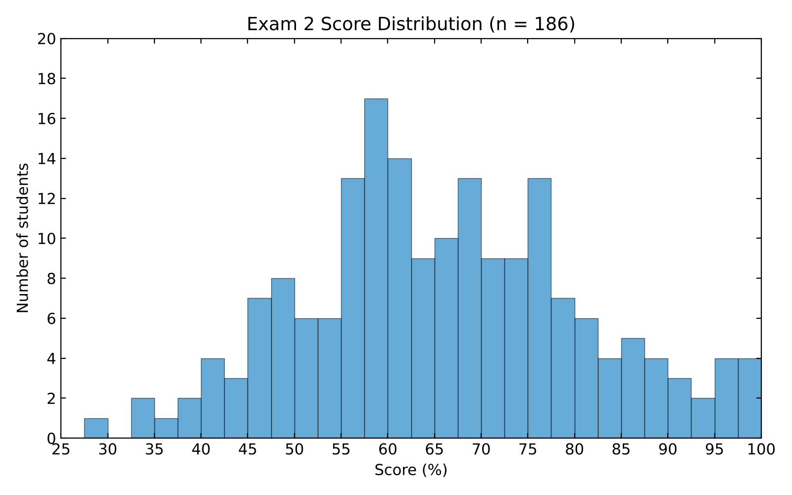

Exam 2 grades are posted
Exam 2 (Lectures 11–20) is graded, and your scores are in Brightspace. Of 190 students, 186 took it; the four absences fall under the missed-exam policy.
The class average was 65.83% (79.0 out of 120) and the median was 64.79%. Scores ranged from 27.92% to 97.50%.

Number of students in each score range
| Score range | Letter guide | Students |
|---|---|---|
| 90–100% | A | 13 |
| 85–89.9% | A− | 9 |
| 80–84.9% | B+ | 10 |
| 75–79.9% | B | 20 |
| 70–74.9% | B− | 18 |
| 65–69.9% | C+ | 23 |
| 60–64.9% | C | 23 |
| 55–59.9% | C− | 30 |
| 45–54.9% | D | 27 |
| Below 45% | F | 13 |
| Total | 186 |
Most of you did well on sensory structures and on the behavior in jumping spider vision, moth bat-evasion and passive electroreception. Points were lost on motion detection, bat target-range computation and owl map plasticity. Those answers usually named the right concept but didn't explain the experiment, what happened, and why that result supports the mechanism. That reasoning is what I grade. Naming a brain region or repeating a slide is not an answer, and a longer answer is not a better one.
Seventy of you scored below 60%. That does not mean you have failed the course, but it does mean the way you're studying isn't working yet. Go back through each question you missed, figure out what went wrong, and answer it again without your notes. Then come see me: Tuesdays and Thursdays, 5–7 pm, in ANI 208. Bring your exam and specific questions.
There is no curve on this exam. A curve is applied only at the end of the semester, and only if the final class average is below 70%, so don't plan around one.
Exam 3 is Monday, November 9, at 12:00 PM, covering Lectures 21–30, and recordings start coming out on November 2. Two exams and the project are still 60% of your lecture grade, so there is plenty of room to turn this around. Start now.
Dr. Lopez